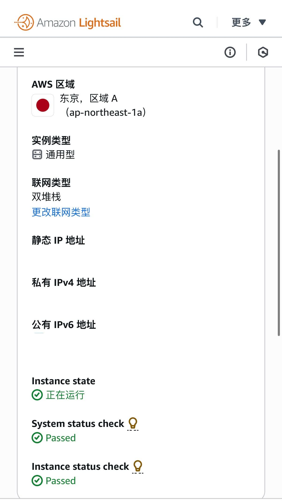

Threads｜AWS 免費抵用金與 Lightsail 個案：期限、費用與住宅代理風險
AWS 免費抵用金與 Lightsail 個案：期限、費用與住宅代理風險
作者的案例不等於一般保證
Chris 自述以手機和 Muse 協助建立東京 AWS Lightsail，將其作為前置節點並接住宅 IP 出口；他覺得比之前的中轉更快更穩。續文稱取得 200 美元抵用金，建議設定 10 美元月預算提醒，並提及每月 7 美元機器和升級付費方案。這些是作者的個案，不是獨立效能、帳單、資格或穩定度測試。作者回覆說能使用特定服務但帳號風險看運氣，並非服務商對地域資格或帳號安全的保證。
AWS 官方文件核對（2026-11-23）
- 資格：新客戶最高 200 美元抵用金，初始 100 美元，完成指定活動可再賺最高 100 美元；曾有 AWS 帳戶者不符合。具體活動與完成條件需以當時控制台和官方說明為準，不是所有人自動獲得 200 美元。
- 支付與驗證：目前 FAQ 說多數新客戶註冊不要求付款方式，部分情況可能為身分驗證而要求；作者綁卡和手機驗證只是其情境，不能推成所有人必須綁卡或人人免卡。AWS 帳戶建立文件也提及可能需電話驗證。
- 期限：現行 FAQ 的一般說明稱抵用金自建立帳戶起 6 個月到期；同頁又稱升級付費方案後餘額及活動抵用金可於建立帳戶後 12 個月內使用，另有進階功能段落稱 6 個月。官方文字存在差異，且 2026 年 10 月新註冊體驗與舊帳戶可能不同，應依帳戶實際抵用金到期日及 AWS 支援確認；不可把最長 12 個月當成人人享有一年免費機器。
- 免費方案通常在 6 個月或抵用金耗盡先到者結束，AWS 暫停帳戶及資源；官方稱保留資料 90 天，期間升級付費方案可恢復，否則永久刪除。升級後未用完且仍有效的抵用金可抵合格用量，超出額度或到期後按適用價格收費；不可降回免費方案。免費方案啟用某些付費功能亦可能收費，請核實當前條款。
- Lightsail 的價格與網路流量依機型、IP 類型、地區及當時價目表決定。官方說入站與出站都消耗包含流量，但只有超額出站計超額費；部分地區的包含額減半，東京未列於該減半清單。鏈式流量可能在不同供應商各自計費；快照、磁碟、閒置 IP 等另查適用價格。作者的 7 美元不是目前所有機型的通用價格，也不是總成本。
- 預算提醒是提醒，不等於帳單硬上限；即使設定自動動作，仍須核對其範圍、延遲與是否覆蓋全部資源。資料應獨立備份並測試還原。
住宅代理與權限風險
住宅 IP 只描述出口類型，不證明位置、身分、合規性、隱私、帳號安全或可用性。出口供應商可能觀察未端到端加密流量、流量中繼資料及目標；要查來源是否經住戶明確同意、供應鏈、記錄與保留、費用和退款。不同供應商、目標服務及當地法律的條款需分別核對；不要用代理規避帳號資格或區域限制。AI 助理若取得雲端或終端權限，有設定錯誤、祕密外洩與意外付費風險，應最小權限、人工審核並避免公開憑證或節點連結。
圖片與查核限制
主帖公開載入三張截圖，分別呈現個人抵用金摘要、東京實例畫面及代理客戶端畫面；畫面不能獨立證明實際帳單或長期運作。抵用金及代理設定涉及個人權益或配置，不公開鏡像。東京實例截圖的 IP 欄位未顯示地址，未見帳號識別或憑證；保存公開壓縮版，來源 Chris，重用授權未確認。未登入、註冊、付款、部署或修改 AWS，也未測試作者的方案。所見續文可能不完整；官方內容與價格會變動。

來源
原貼：https://www.threads.com/@chris9527x/post/DgBsF5GDTOk
AWS 免費方案 FAQ：https://aws.amazon.com/free/free-tier-faqs/
Lightsail 價格：https://aws.amazon.com/lightsail/pricing/
AWS 帳戶建立文件：https://docs.aws.amazon.com/accounts/latest/reference/manage-acct-creating.html